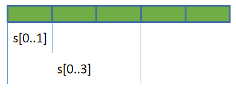

Slice類型
Slice類型通常翻譯為切片，它表示從某個包含多個元素的容器中取得局部數據，這個過程稱為切片操作。不同語言對切片的支持有所不同，比如有些語言只允許取得連續的局部元素，而有些語言可以取得離散元素，甚至有些語言可以對hash結構進行切片操作。
Rust也支持Slice操作，Rust中的切片操作只允許獲取一段連續的局部數據，切片操作獲取到的數據稱為切片數據。
Rust常見的數據類型中，有三種類型已支持Slice操作：String類型、Array類型和Vec類型(本文介紹的Slice類型自身也支持切片操作)。實際上，用戶自定義的類型也可以支持Slice操作，只要自定義的類型滿足一些條件即可，相關內容以後再介紹。
slice操作
有以下幾種切片方式：假設s是可被切片的數據
s[n1..n2]：獲取s中index=n1到index=n2(不包括n2)之間的所有元素s[n1..]：獲取s中index=n1到最後一個元素之間的所有元素s[..n2]：獲取s中第一個元素到index=n2(不包括n2)之間的所有元素s[..]：獲取s中所有元素- 其他表示包含範圍的方式，如
s[n1..=n2]表示取index=n1到index=n2(包括n2)之間的所有元素
例如，從數據s中取第一個元素和取前三個元素的切片示意圖如下：

切片操作允許使用usize類型的變量作為切片的邊界。例如，n是一個usize類型的變量，那麼s[..n]是允許的切片操作。
slice作為數據類型
和其他語言的Slice不同，Rust除了支持切片操作，還將Slice上升為一種原始數據類型(primitive type)，切片數據的數據類型就是Slice類型。
Slice類型是一個胖指針，它包含兩份元數據：
- 第一份元數據是指向源數據中切片起點元素的指針
- 第二份元數據是切片數據中包含的元素數量，即切片的長度
例如，對於切片操作s[3..5]，其起點指針指向s中index=3處的元素，切片長度為2。
Slice類型的描述方式為[T]，其中T為切片數據的數據類型。例如對存放了i32類型的數組進行切片，切片數據的類型為[i32]。
由於切片數據的長度無法在編譯期間得到確認(比如切片操作的邊界是變量時s[..n])，而編譯器是不允許使用大小不定的數據類型的，因此無法直接去使用切片數據(比如無法直接將它賦值給變量)。
fn main(){ let arr = [11,22,33,44,55]; let n: usize = 3; // 編譯錯誤，無法直接使用切片類型 let arr_s = arr[0..n]; }
也因此，在Rust中幾乎總是使用切片數據的引用。切片數據的引用對應的數據類型描述為&[T]或&mut [T]，前者不可通過Slice引用來修改源數據，後者可修改源數據。
注意區分Slice類型和數組類型的描述方式。
數組類型表示為
[T; N]，數組的引用類型表示為&[T; N]，Slice類型表示為[T]，Slice的引用類型表示為&[T]。
例如，對一個數組arr做切片操作，取得它的不可變引用arr_slice1和可變引用arr_slice2，然後通過可變引用去修改原數組的元素。
fn main(){ let mut arr = [11,22,33,44]; // 不可變slice let arr_slice1 = &arr[..=1]; println!("{:?}", arr_slice1); // [11,22]; // 可變slice let arr_slice2 = &mut arr[..=1]; arr_slice2[0] = 1111; println!("{:?}", arr_slice2);// [1111,22]; println!("{:?}", arr);// [1111,22,33,44]; }
需要說明的一點是，雖然[T]類型和&[T]類型是有區別的，前者是切片類型，後者是切片類型的引用類型，但因為幾乎總是通過切片類型的引用來使用切片數據，所以通常會去混用這兩種類型(包括一些書籍也如此)，無論是[T]還是&[T]都可以看作是切片類型。
特殊對待的str切片類型
需要特別注意的是，String的切片和普通的切片有些不同。
一方面，String的切片類型是str，而非[String]，String切片的引用是&str而非&[String]。
另一方面，Rust為了保證字符串總是有效的Unicode字符，它不允許用戶直接修改字符串中的字符，所以也無法通過切片引用來修改源字符串，除非那是ASCII字符(ASCII字符總是有效的unicode字符)。
事實上，Rust只為&str提供了兩個轉換ASCII大小寫的方法來修改源字符串，除此之外，沒有為字符串切片類型提供任何其他原地修改字符串的方法。
fn main(){ let mut s = String::from("HELLO"); let ss = &mut s[..]; // make_ascii_lowercase() // make_ascii_uppercase() ss.make_ascii_lowercase(); println!("{}", s); // hello }
Array類型自動轉換為Slice類型
在Slice的官方手冊中，經常會看到將Array的引用&[T;n]當作Slice來使用。
例如：
#![allow(unused)] fn main() { let arr = [11,22,33,44]; let slice = &arr; // &arr將自動轉換為slice類型 // 調用slice類型的方法first()返回slice的第一個元素 println!("{}", slice.first().unwrap()); // 11 }
所以，可以直接將數組的引用當成slice來使用。即&arr和&mut arr當作不可變slice和可變slice來使用。
另外，在調用方法的時候，由於.操作符會自動創建引用或解除引用，因此Array可以直接調用Slice的所有方法。
例如：
#![allow(unused)] fn main() { let arr = [11, 22, 33, 44]; // 點運算符會自動將arr.first()轉換為&arr.first() // 而&arr又會自動轉換為slice類型 println!("{}", arr.first().unwrap()); }
這裡需要記住這個用法，但目前請忽略以上自動轉換行為的內部原因，其涉及到尚未介紹的類型轉換機制。
Slice類型支持的方法
Slice支持很多方法，這裡介紹幾個比較常用的方法，更多方法可參考官方手冊：https://doc.rust-lang.org/std/primitive.slice.html#impl。
注：這些方法都不適用於String Slice，String Slice可用的方法較少，上面給出官方手冊中，除了方法名中有"ascii"的方法(如is_ascii()方法)是String Slice可使用的方法外，其他方法都不能被String Slice調用。
一些常見方法：
- len()：取slice元素個數
- is_empty()：判斷slice是否為空
- contains()：判斷是否包含某個元素
- repeat()：重複slice指定次數
- reverse()：反轉slice
- join()：將各元素壓平(flatten)並通過指定的分隔符連接起來
- swap()：交換兩個索引處的元素，如
s.swap(1,3) - windows()：以指定大小的窗口進行滾動迭代
- starts_with()：判斷slice是否以某個slice開頭
例如：
#![allow(unused)] fn main() { let arr = [11,22,33]; println!("{}", arr.len()); // 3 println!("{:?}", arr.repeat(2)); // [11, 22, 33, 11, 22, 33] println!("{:?}", arr.contains(&22)); // true // reverse() let mut arr = [11,22,33]; arr.reverse(); println!("{:?}",arr); // [33,22,11] // join() println!("{}", ["junma","jinlong"].join(" ")); // junma jinlong println!("{:?}", [[1,2],[3,4]].join(&0)); // [1,2,0,3,4] // swap() let mut arr = [1,2,3,4]; arr.swap(1,2); println!("{:?}", arr); // [1,3,2,4] // windows() let arr = [10, 20, 30, 40]; for i in arr.windows(2) { println!("{:?}", i); // [10,20], [20,30], [30,40] } // starts_with()，相關的方法還有ens_with() let arr = [10, 20, 30, 40]; println!("{}", arr.starts_with(&[10])); // true println!("{}", arr.starts_with(&[10, 20])); // true println!("{}", arr.starts_with(&[30])); // false }